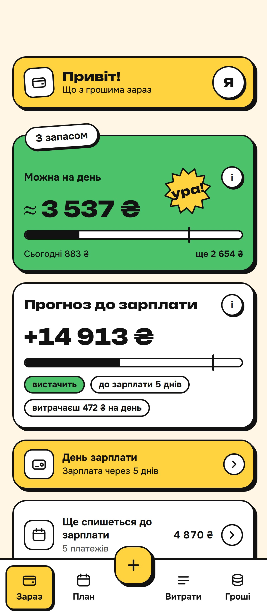

Застосунки
Три застосунки,
три сезони стрімів
Кожен почався з побутової дурниці, яка мене дістала: засохла зелень, прострочені таблетки і вічне «а скільки ще можна витратити»
Грошик
Сімейний гаманець, який сам рахує, чи дотягнеш до зарплати
Підключаєш monobank, і витрати самі розкладаються по категоріях. Жодних таблиць у неділю ввечері. Грошик каже, скільки можна витратити сьогодні, щоб в останній тиждень не їсти саму гречку
- До зарплатиДнів до зарплати і сума на день. Купив каву, сума перерахувалась
- Конверти і лімітиПродукти, коти, кава: у кожного свій конверт. Жовтіє, коли лишилось мало
- Бот у TelegramПише, коли злетіла велика сума, і зранку коротко каже, як справи з бюджетом
чому це крутоБанківський токен живе тільки в тебе на телефоні, на мій сервер він не їде. І бюджет один на двох: не треба пересилати одне одному скріни з банку
Відкрити ГрошикПоки тестуємо на своїй сімʼї, публічна версія вже в роботі

До зарплати
12 днів
лишилось 7 680 ₴, по 640 ₴ на день
Конверти на місяць
Продукти3 200 з 5 000
Коти980 з 1 200
Кава470 з 500
Грошик-бот у Telegram
Крупна витрата: 1 240 ₴, Сільпо. Це 18% тижня на продукти